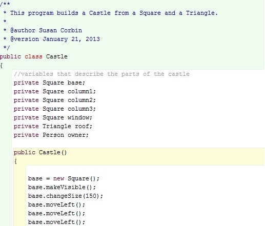

Silver Lining Design and Programming, owned and operated by Susan Corbin, provides services including website design and production, mainframe programming, animation services and project management. All services are provided in a professional and timely manner with an eye on customer satisfaction in everything I do.
I have always had an interest in computers and how they work. To be able to work with computers for a living is very exciting to me. Providing good quality service is important to me because in business today it can be sadly lacking. A happy customer is the best result you can possibly have after completing a project and having that keeps me working as hard as I possibly can.
Reliable, hardworking computer student wanting to develop mainframe skills or any position that will utilize current academic knowledge and skills with computer technologies. Possess excellent work habits and enthusiasm to deliver quality workmanship and problem solving scenarios.
After many years in the business world and ten years as a real estate agent, I returned to school in 2010 to pursue a new career in Computer Programming. It has been a challenging and exhilirating experience which I am enjoying immensely.
For further information or to ask for a quotation please feel free to contact me. You will be pleased with my pricing and the excellent service that I provide.
1970 Champlain Road,
Tiny, Ontario,
L9M 0B6
Phone: (705) 549-6674
Cell: (705) 427-6086
E-Mail: susan.corbin17@gmail.com


I have completed several websites for clients in the Toronto area. They range from aerial photographers to restaurants and even a culinary school. My work on these websites included copywriting and logo design.


With my training at Georgian College I would fit into an organization as an entry level mainframe programmer using my skills in COBOL and Java.
This was a website designed for a new restaurant in Richmond Hill, Ontario. It entailed 5 pages with a 6 photo slideshow on the first page and multiple pictures mixed in with text on the menu page. The text and photos were laid over a blue tiled, textured background to give it some depth.
Back to Projects PageThis was a project completed for my Animation 2D Tools course at Georgian College. It involved using Adobe Flash Professional CS6 to produce a movie clip of 2 balls. One was bouncing on the ground and had a shadow. The other came through the screen from the other direction in a wavy motion above the "floor" level.
Back to Projects Page
This was a program written in my Introduction to Object Oriented Programming course at Georgian College. It involved designing a program for a ticket machine that issues tickets for a specific price. It calculates the total amount deposited, and runs a total amount taken in by the machine. It then prints the ticket.
Back to Projects Page
This was a website made for an aerial photographer based out of the GTA. It involved 5 web pages, a slideshow on the home page and approximately 60 photographs of homes and commercials properties divided between two web pages. The residential web page was divided into seasons as well as into repeat seasonal photographs of the same house and pictorial histories of a single house taken over the course of many years and incarnations. I was involved in writing the text for the website, choosing the photos and all layout designs.
Back to Home Page
This was a project management assignment completed where we had to follow the System Development Life Cycle (SDLC) of a project from its inception to completion. It involved the introduction of a new computer server into a company replacing two antiquated servers in an office with approximately 30 employees. The installation, testing and transfer to the new server had to be completed without interuption of service to the employees.
Back to Home Page
This was a program which calculated raises for employees in a company in 2 regions and 10 offices who had been with the company over 10 years. There were approximately 30 employees and about one third were in that category. The program also set up headings and used the current date as input by the user.
Back to Home Page